Young adults that are freshly off of their parents health insurance are often frustrated and discouraged when looking for new providers.

Healthcare Genie
The comprehensive healthcare app that helps young adults find the best healthcare option for their needs.
Healthcare Genie
User Experience Design
Young adults shouldn’t have to struggle with finding the right provider in their area. Healthcare Genie is a comprehensive healthcare app that helps young adults find the best healthcare option for their needs.
View Figma Prototype >
Design Role
- UX Design
- UI Design
Deliverables
- User Surveys
- Competitive Analysis
- Personas
- User Journey
- User Stories & Flows
- Wireframes
- User Testing
- Visual Design
- Competitive Analysis
Tools
- Figma
- Miro
- Photoshop
OVERVIEW
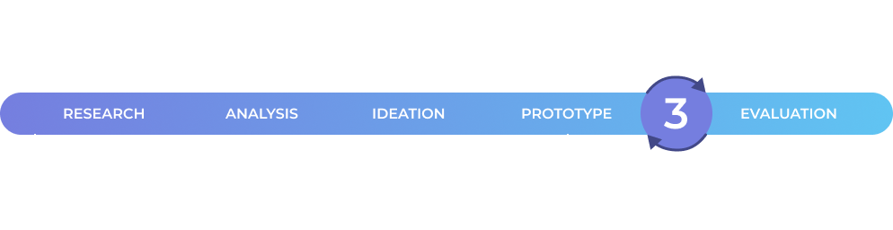
THE MAIN
Problems
Insurance is complicated.
Finding a doctor in the area can be confusing.
Going to the doctor can be expensive.
OUR PRIMARY
Insights
Most of our respondents said that they most often use Google to find a healthcare provider in their area. However, it’s often overwhelming because of the copious amounts of providers. Respondents also found healthcare in the United States to be too complicated and expensive. This has resulted in individuals avoiding the doctors office unless absolutely necessary.
OUR
Solutions
1. Create an application that simplifies the healthcare process.
2. Rank doctors and providers based off of real patient reviews.
3. Include copay amounts for insurance companies.
4. Be able to create appointments with doctors that are nearby.
PROCESS
OUR
Assumptions
We made some general assumptions about people and finding healthcare providers.
1. People find it difficult to find a healthcare provider;
2. They don’t want to spend a lot of time and energy finding a healthcare provider;
3. Finding nearby doctors that are credible is difficult;
4. People are often taken off guard by the price of healthcare services.
In a post-pandemic world, people are leaving their homes less and less, especially to go see the doctor. Finding the right doctor nearby is often very complex and overwhelming for individuals.
THE
Research
To better understand the users needs regarding healthcare, my team and I conducted several user interviews.
7
User Interviews
17
Interview Questions
100%
of people interviewed use Google to search for healthcare providers.
85%
of people interviewed put off going to the doctor unless absolutely necessary.
85%
of people interviewed think the American healthcare system is too complex.
57%
of people interviewed are still on their parents insurance.
Key takeaways from our user interviews:
1. As users stated they want a simplified way to look at insurance and healthcare providers, Healthcare Genie should categorize and rank providers for users.
2. Because doctor trips can be expensive, users want to know what their visit will cost upfront along with any additional fees, Healthcare Genie should show copays and other fees that you’ll be charged before your visit.
USER
Persona
My teams user interviews gained us very valuable user insights which we used to form a user persona. The main goal of the persona was to display those patterns and pain points, which then allowed us to further empathize with users.
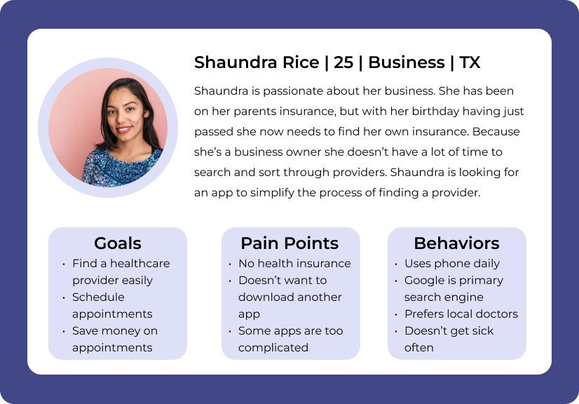Considering Shaundra’s goals and pain points, the main theme is to simplify the process of finding a healthcare provider for users while taking into account those providers’ proximity to the user.
USER
Journey Map
By creating a user journey map we gained a better understanding of the users’ expectations and their experiences while finding a provider without our app.
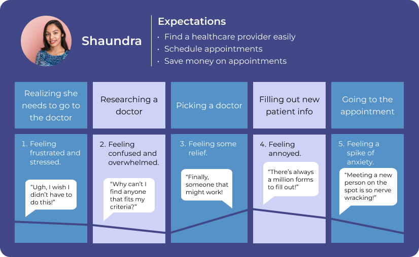HIGHLIGHTS
Competitive Analysis
To create a unique value proposition for Healthcare Genie, we analyzed our top current competitors. Healthcare Genie offers the main features that our competitors provide to users while our app is more organized and doesn’t require any extra fees to use.
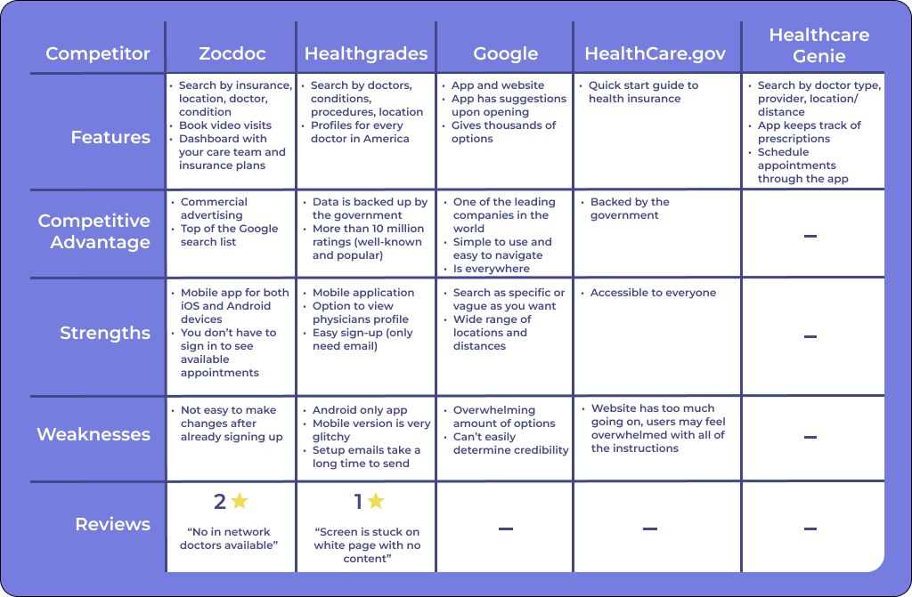USER STORIES &
User Flows
After conducting market and user research, it’s time to highlight the features of the product. The user stories were used to create User flows, which were done in Figma, to show how the user would interact with the product to accomplish their goals.
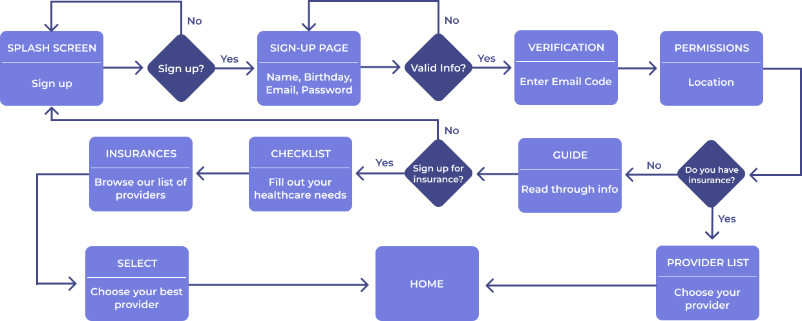As a new user with no insurance, I want to sign-up and find a provider that works for me.
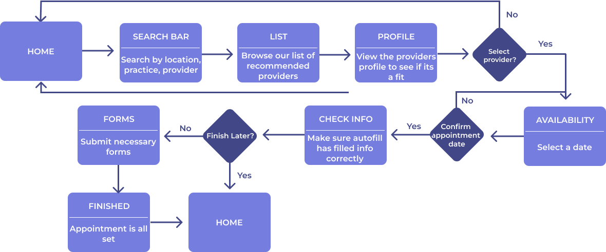As an existing user without insurance, I want to find insurance and make an appointment with a doctor.
WIREFRAMES & TESTING
WIREFRAME
Hand Sketches
We hand sketched some ideas for Healthcare Genie features.
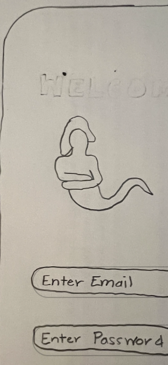
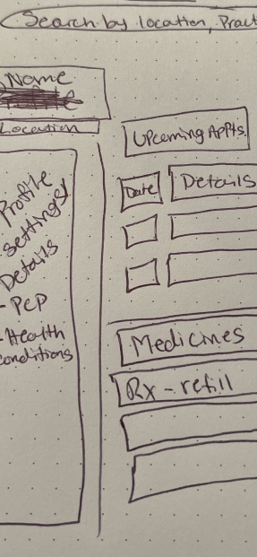
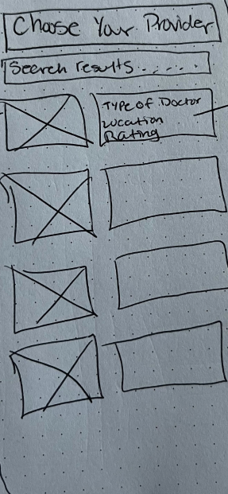
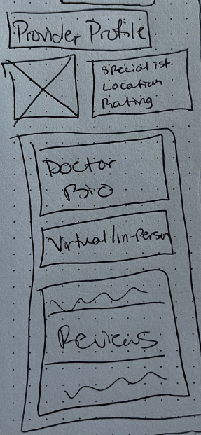
MIDFI
Wireframes
Here are our basic wireframes we created to have a defined template of the screens.
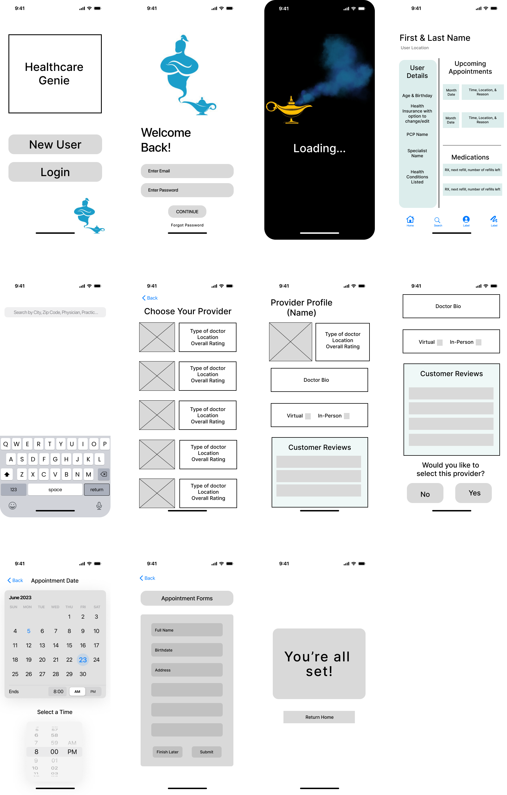USER
Testing
My team and I conducted 4 user tests to test the functionality of the application.
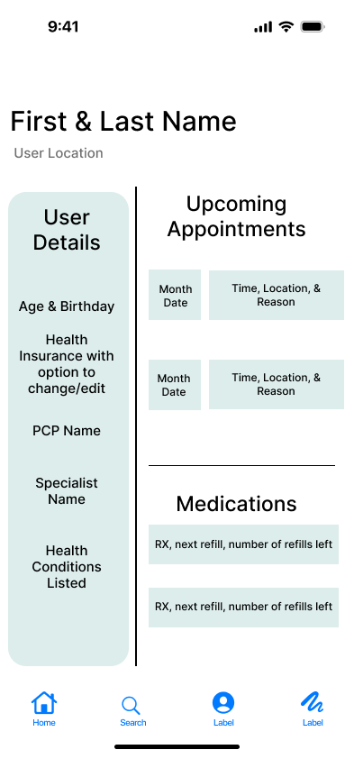
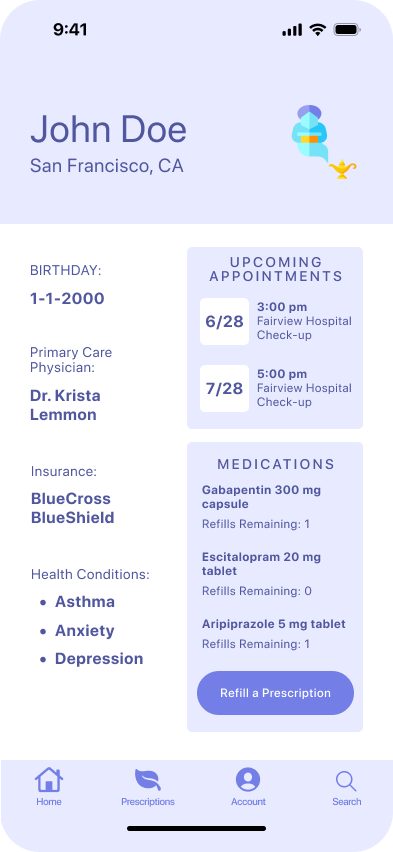
Some users thought that the home page was hard to navigate with no identification of actions to take. So we decided to simplify the information that is shown and add clear buttons to show what actions can be taken on the screen.
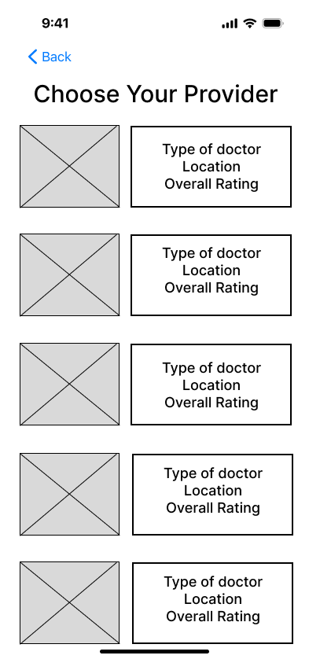
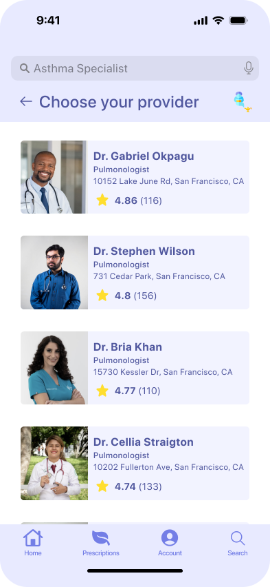
The screen included a back arrow to navigate to the most recent page, however, there’s no way to navigate to other important pages. So I added the main navbar to the provider page for ease of access.
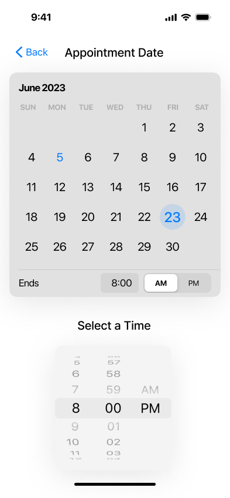
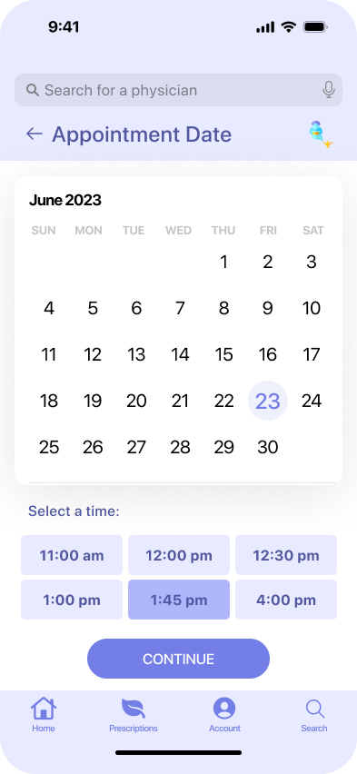
On the setting an appointment screen users didn’t know what times would be available for an appointment. So we decided to only show available appointment times on the screen.
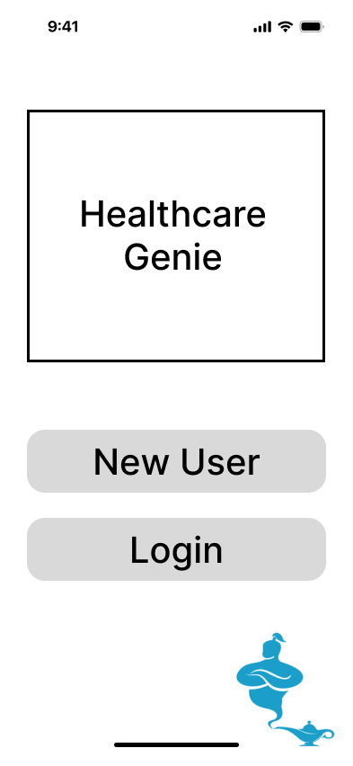
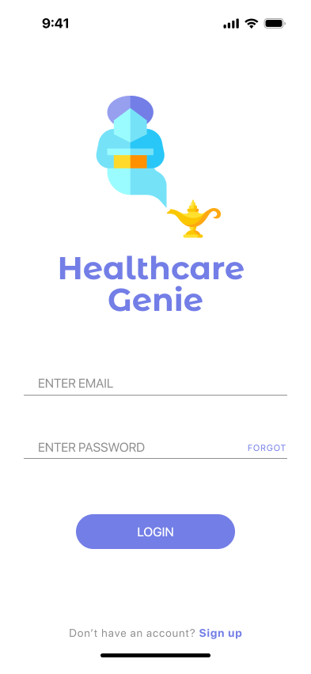
The onboarding process was too long and complex, so we simplified how you first interact with the app and moved the new user sign up option to the bottom.
PROTOTYPE
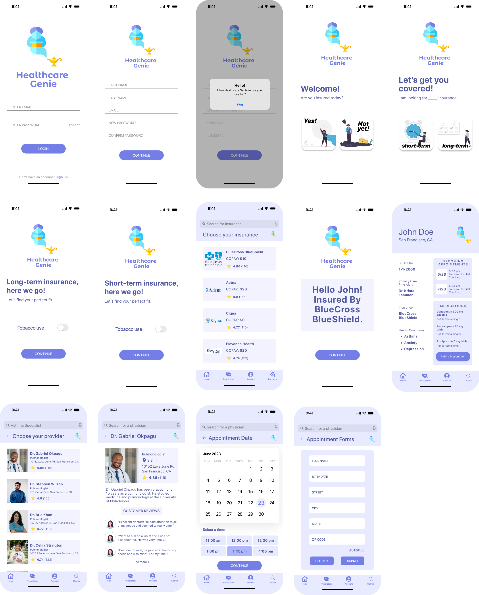
Next Step
Next, we would add a messaging feature where you can talk directly with your provider through the app.

Lesson Learned
While originally we had thought that the medical process was the largest issue users faced, we learned that a patients insurance and financial standing were more of a problem during times of medical need.